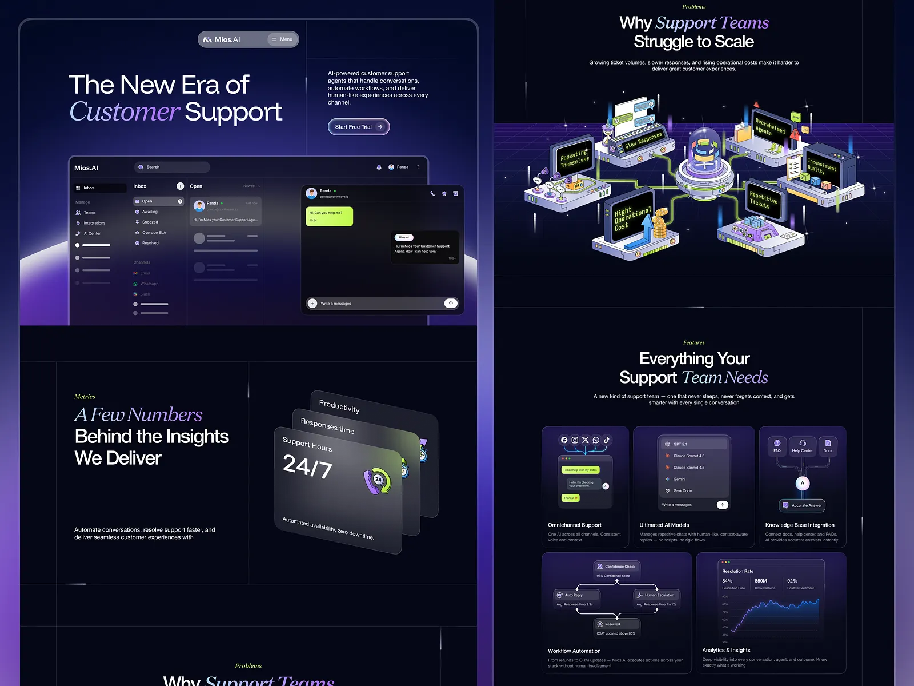
dr-aisupport-01.webp · Mios.AI — AI Customer Support Landing Page 💬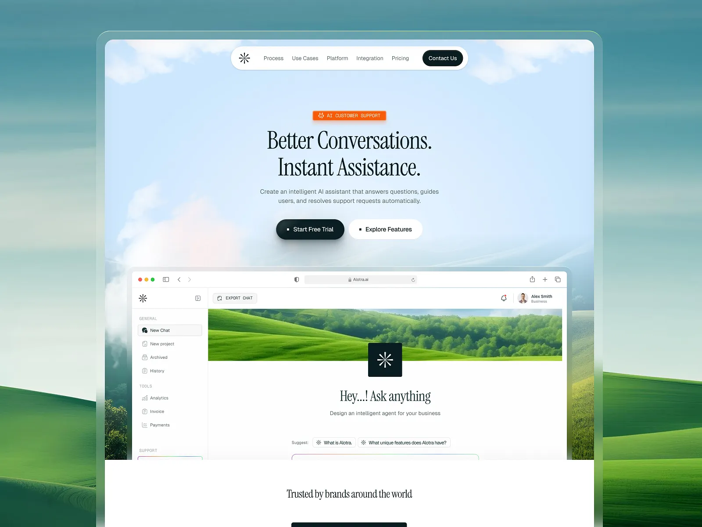
dr-aisupport-02.webp · Alotra — AI Customer Support Landing Page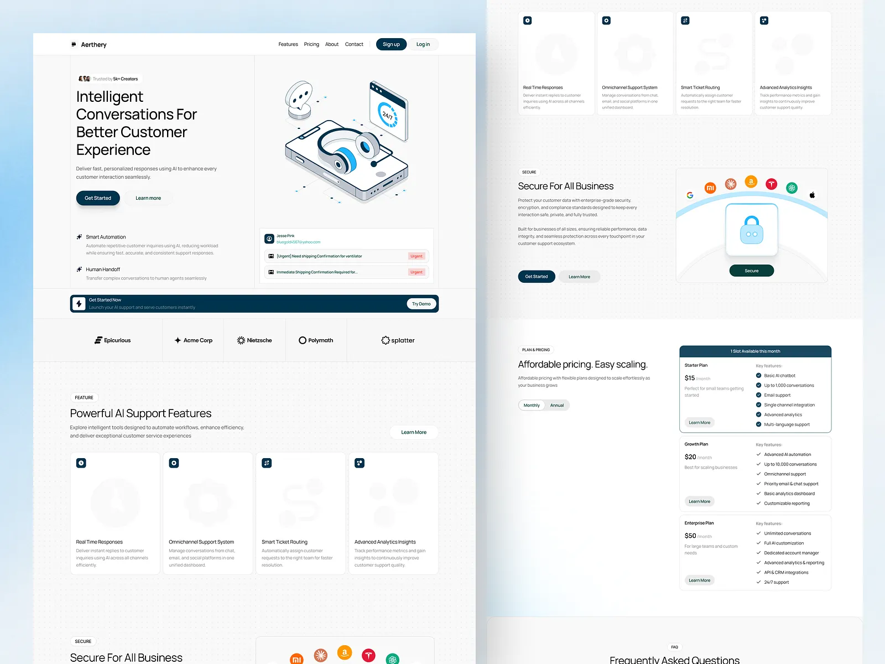
dr-aisupport-03.webp · Aerthery — AI Customer Support Landing Page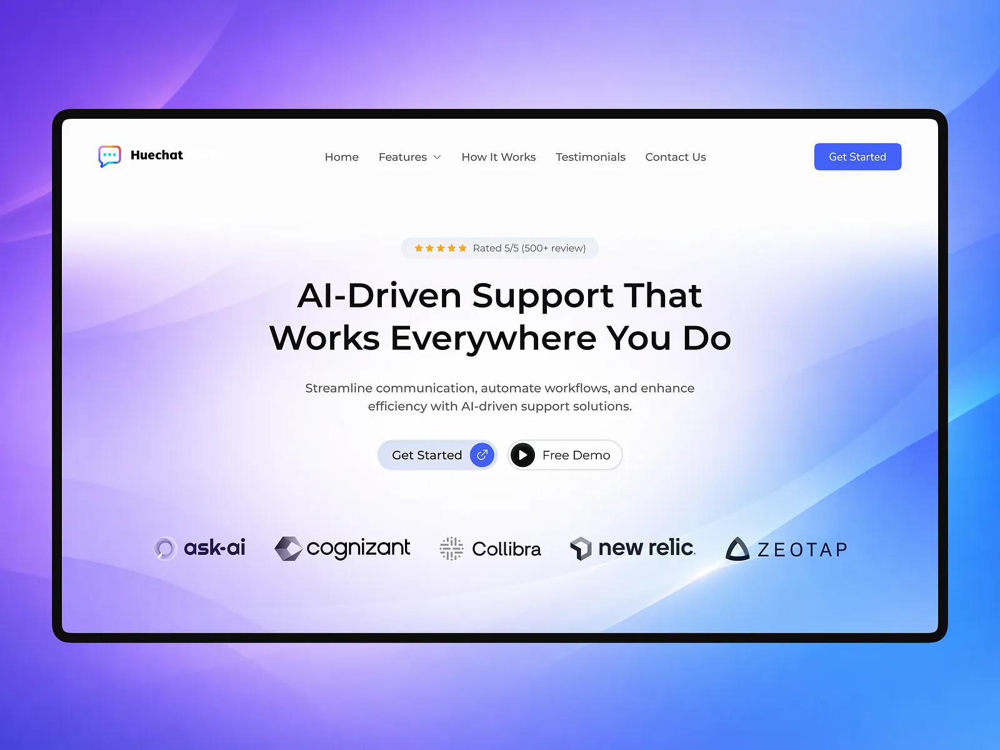
dr-aisupport-04.webp · HueChat — AI Customer Support Landing Page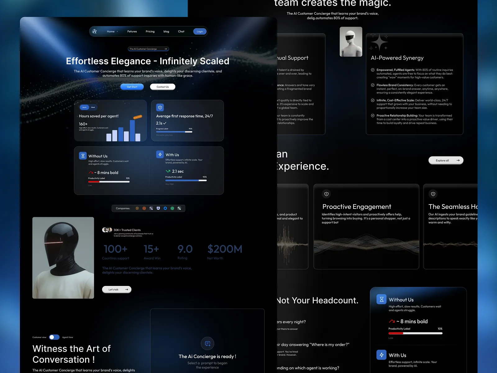
dr-aisupport-05.webp · AI Customer Support Landing Page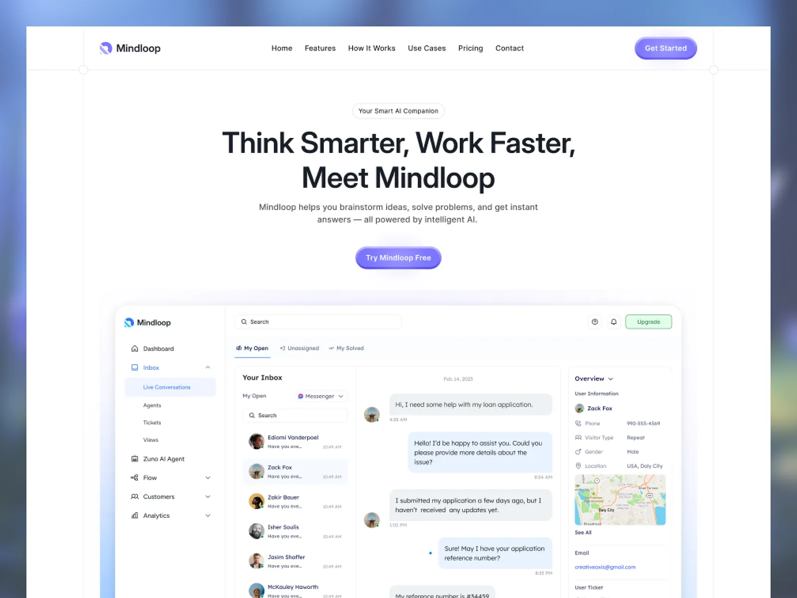
dr-aisupport-06.webp · Agentic AI Customer Support Landing Page Design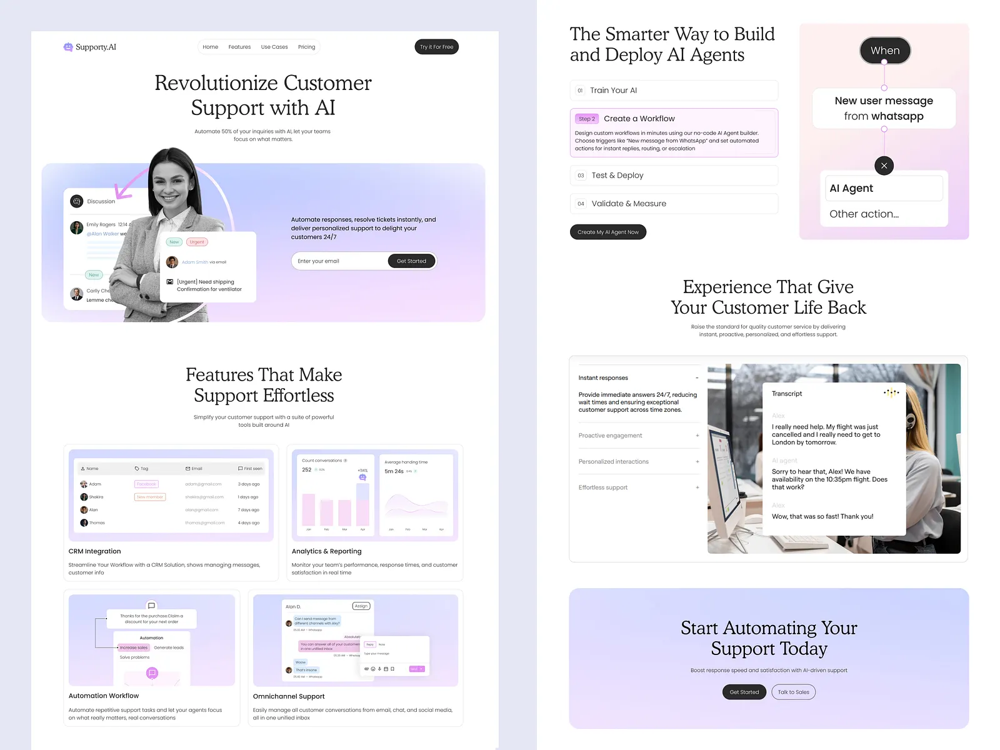
dr-aisupport-07.webp · AI Customer Support SaaS Landing Page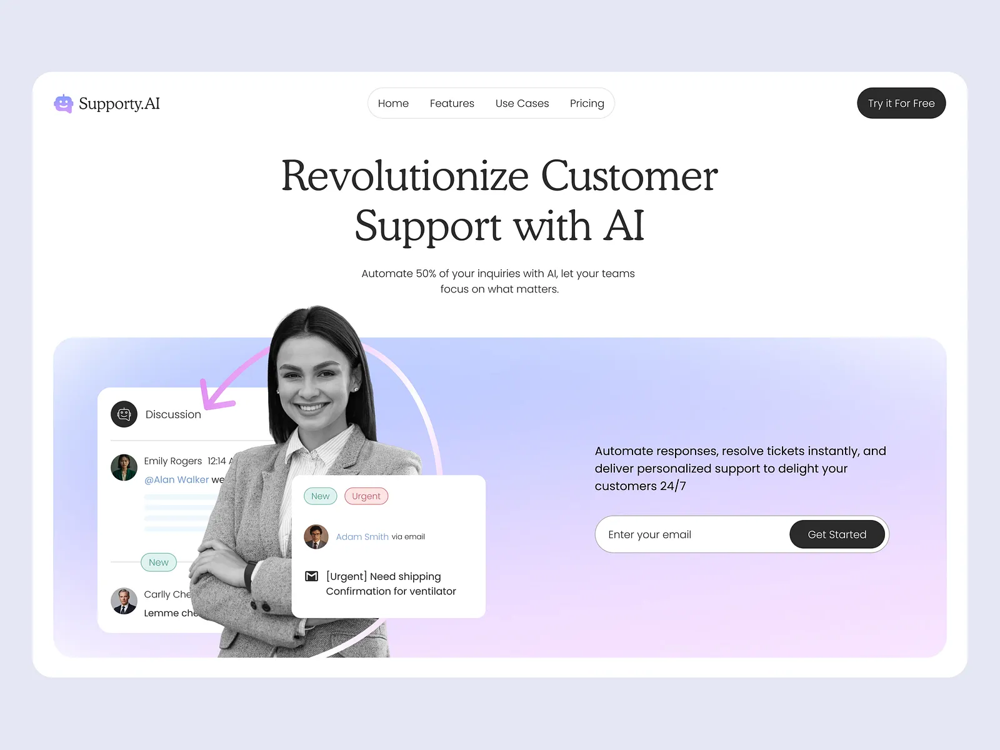
dr-aisupport-08.webp · AI Customer Support SaaS Website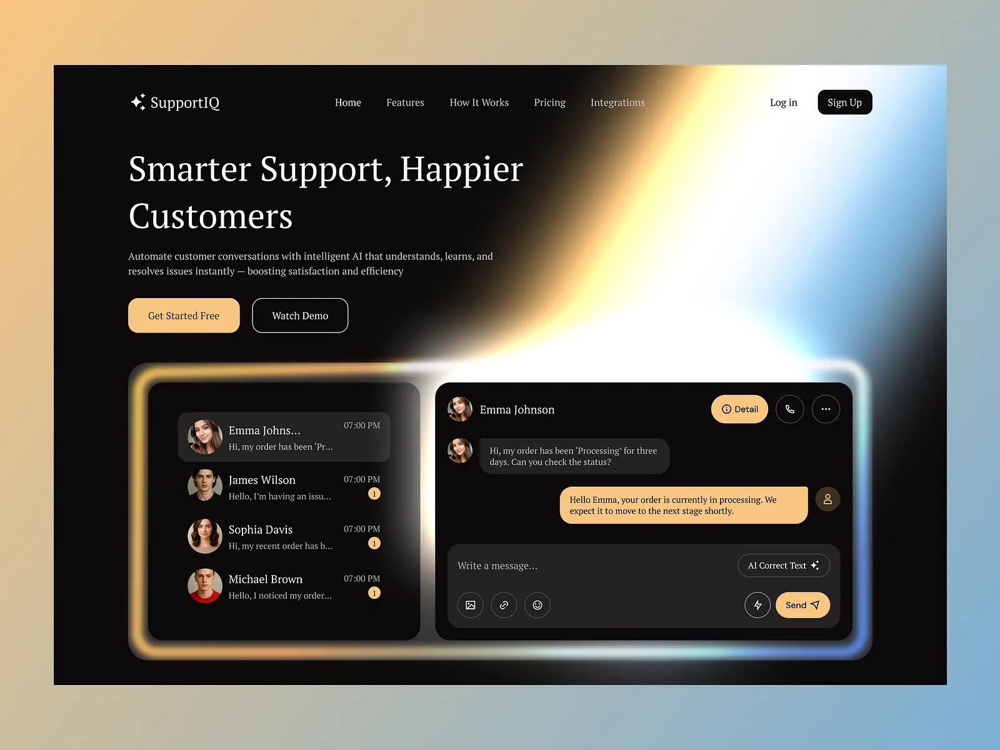
dr-aisupport-09.webp · AI Customer Support SaaS Website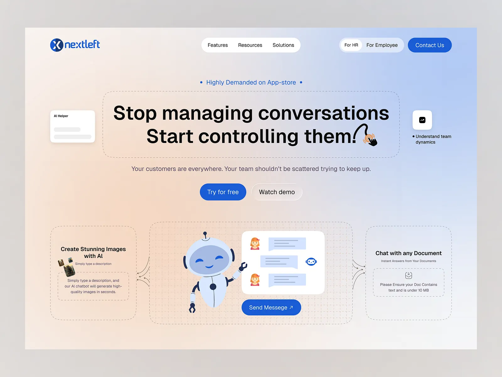
dr-aisupport-10.webp · AI Customer Support SaaS Landing Page UI Design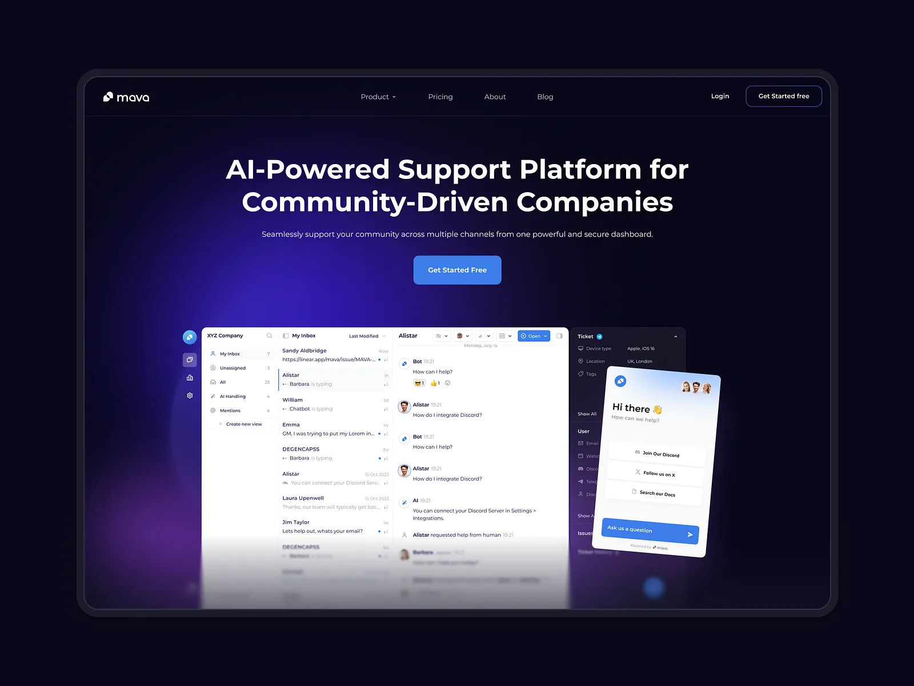
dr-aisupport-11.webp · AI Customer Support SaaS Landing Page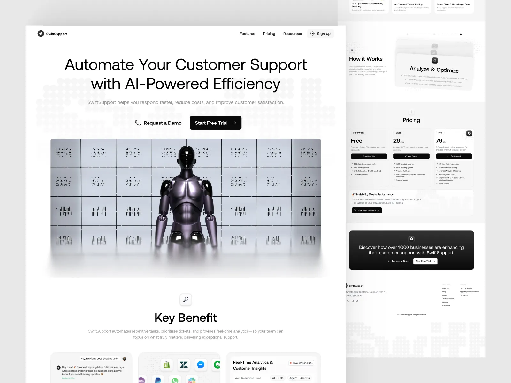
dr-aisupport-12.webp · 🚀 SwiftSupport: AI-Powered Customer Support Landing Page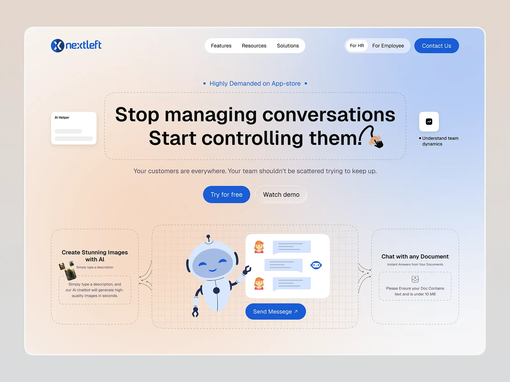
dr-aisupport-13.webp · AI Customer Support SaaS Landing Page UI Design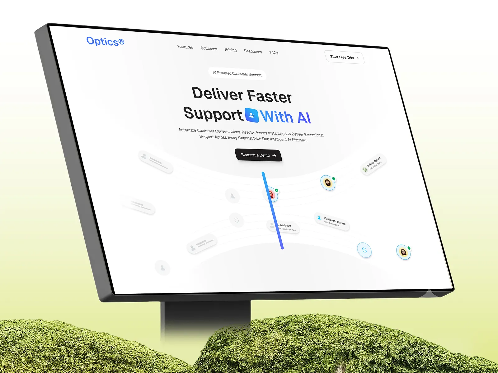
dr-aisupport-14.webp · AI Customer Support SaaS Landing Page